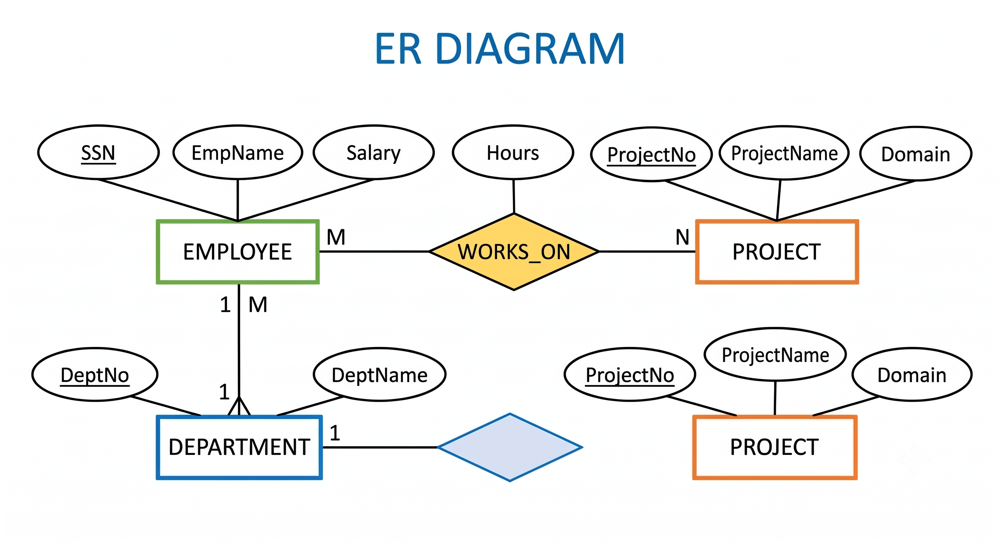

To design an Employee–Department–Project database, create tables, insert data and perform SQL operations using Oracle SQL.
Consider an Employee with a social security number (SSN) working on multiple projects with definite hours for each. Each Employee belongs to a Department. Each project is associated with some domain areas such as Database, Cloud and so on. Each Employee will be assigned to some project.

DEPARTMENT -------------------- DeptNo (PK) DeptName PROJECT -------------------- ProjectNo (PK) ProjectName Domain EMPLOYEE -------------------- SSN (PK) EmpName Salary DeptNo (FK) ProjectNo (FK) WORKS_ON -------------------- SSN (FK) ProjectNo (FK) Hours
CREATE TABLE Department( DeptNo NUMBER PRIMARY KEY, DeptName VARCHAR2(30) ); CREATE TABLE Project( ProjectNo NUMBER PRIMARY KEY, ProjectName VARCHAR2(30), Domain VARCHAR2(30) ); CREATE TABLE Employee( SSN NUMBER PRIMARY KEY, EmpName VARCHAR2(30), Salary NUMBER, DeptNo NUMBER, ProjectNo NUMBER, FOREIGN KEY(DeptNo) REFERENCES Department(DeptNo), FOREIGN KEY(ProjectNo) REFERENCES Project(ProjectNo) ); CREATE TABLE Works_On( SSN NUMBER, ProjectNo NUMBER, Hours NUMBER, PRIMARY KEY(SSN,ProjectNo), FOREIGN KEY(SSN) REFERENCES Employee(SSN), FOREIGN KEY(ProjectNo) REFERENCES Project(ProjectNo) );
INSERT INTO Department VALUES(10,'CSE'); INSERT INTO Department VALUES(20,'ISE'); INSERT INTO Department VALUES(30,'ECE'); INSERT INTO Project VALUES(101,'Library','Database'); INSERT INTO Project VALUES(102,'AWS Portal','Cloud'); INSERT INTO Project VALUES(103,'ERP','Database'); INSERT INTO Employee VALUES(1001,'Ananth',50000,10,101); INSERT INTO Employee VALUES(1002,'Rahul',55000,10,103); INSERT INTO Employee VALUES(1003,'Sneha',60000,20,102); INSERT INTO Employee VALUES(1004,'Asha',65000,30,101);
Obtain details of employees assigned to Database project
SELECT E.* FROM Employee E JOIN Project P ON E.ProjectNo=P.ProjectNo WHERE P.Domain='Database';
| SSN | EmpName | Salary | DeptNo | ProjectNo |
|---|---|---|---|---|
| 1001 | Ananth | 50000 | 10 | 101 |
| 1002 | Rahul | 55000 | 10 | 103 |
| 1004 | Asha | 65000 | 30 | 101 |
Number of Employees in each Department
SELECT D.DeptNo, D.DeptName, COUNT(*) AS Employee_Count FROM Employee E JOIN Department D ON E.DeptNo=D.DeptNo GROUP BY D.DeptNo,D.DeptName;
| DeptNo | DeptName | Employee Count |
|---|---|---|
| 10 | CSE | 2 |
| 20 | ISE | 1 |
| 30 | ECE | 1 |
Update Project Details
UPDATE Employee SET ProjectNo=102 WHERE SSN=1001; SELECT * FROM Employee WHERE SSN=1001;
| SSN | EmpName | Salary | DeptNo | ProjectNo |
|---|---|---|---|---|
| 1001 | Ananth | 50000 | 10 | 102 |
The Employee–Department–Project database was successfully designed, implemented and queried using Oracle SQL. All required operations were executed successfully and expected results were obtained.